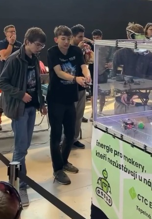
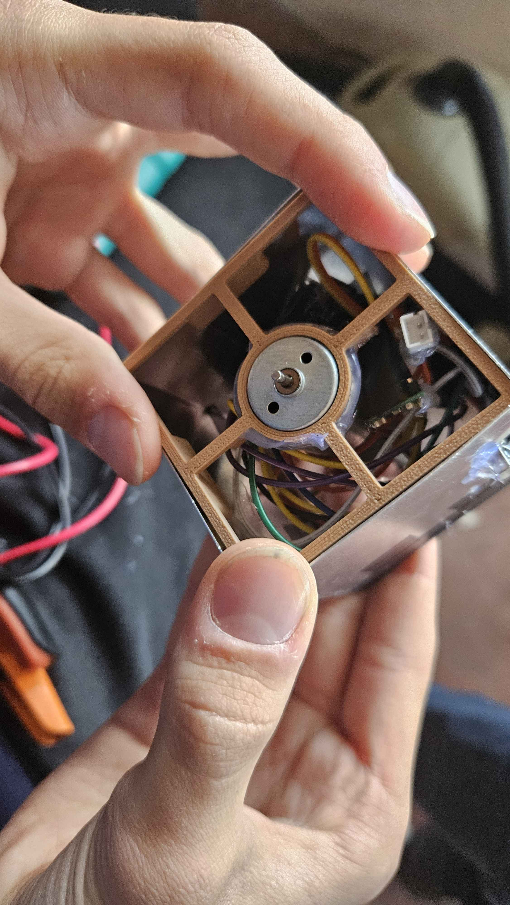
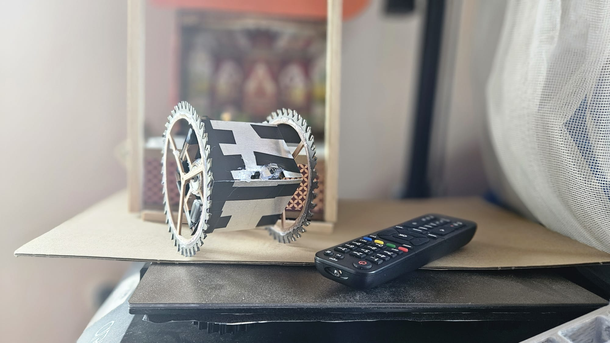

Bitva robotů na Maker Faire
14. 05. 2026
Zakládající členové studentské iniciativy VLČR Lukáš Horák a Robin Josef Šafařík se zúčastnili napínavého turnaje bojových robotů Battlebots, který se konal v rámci festivalu Maker Faire v Praze pod hlavičkou organizace FLS Battlebots. Na startovní pole nasadili svůj vlastní stroj s výstižným názvem „Ano“. Tento bojový robot vsadil na netradiční a agresivní konstrukci v podobě plechové krychle, jejíž pojezdová kola tvořily kotouče z cirkulárky.
Rozhodnutí zúčastnit se turnaje bylo spontánní a padlo pouhý týden před samotným startem. Členové týmu tak museli bleskově shromáždit veškeré dostupné součástky a okamžitě se pustit do práce. Původní záměr ovládat robota bezdrátově přes Wi-Fi pomocí chytrého telefonu však těsně před závodem zhatila technická závada – kvůli selhání stabilizátoru napětí AMS1117 došlo ke spálení obou mikrokontrolérů ESP32.
Tým proto musel pod časovým tlakem okamžitě improvizovat. Jako nouzové řešení zvolili platformu Arduino Nano, IR přijímač a klasický televizní ovladač. Výsledkem byl sice vizuálně složitý spletenec drátů, ale plně funkční a extrémně originální systém ovládání.
Právě schopnost reagovat na nečekané krizové situace byla pro mladé konstruktéry největším přínosem celé akce. „Náš tým si vyzkoušel pracovat v naprosté nouzi. Jedna věc je, když má člověk k dispozici všechny potřebné součástky a dostatek času. Pod tlakem se však člověk naučí improvizovat a obrovským způsobem si tím rozvíjí logické myšlení,“ ohlíží se za náročným vývojem Robin Josef Šafařík.
I když robot „Ano“ kvůli technickým limitům neobsadil přední příčky a turnaj neskončil medailovým úspěchem, pro VLČR šlo o mimořádně vydařenou akci. Členové týmu si odnesli cenné zkušenosti s hardwarovým inženýrstvím v polních podmínkách, skvěle se bavili a navázali kontakty s komunitou dalších technologických nadšenců. Ukázalo se, že kreativita a odhodlání dokážou překonat i ty největší technické překážky.



